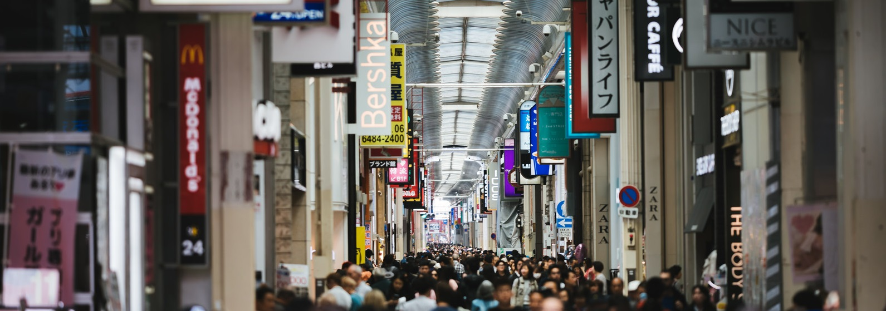

これから
| 年 | 社会人歴 | 目標、やりたいこと |
|---|---|---|
| 2020(令和2年) | 1 | とりあえず仕事に慣れる！ 自分のペースでやっていこう。 |
| 2021(令和3年) | 2 | 仕事に慣れ始めたらキャリアを積む。 いつかは福岡に帰るために！ |
| 2022(令和4年) | 3 | キャリアもそれなりになってきたら応用情報技術者試験を受ける！ なるべく早く受かるといいな・・・。 |
| 2023(令和5年) | 4 | 社会人4年目。 応用情報技術者試験に受かったら 次はプロジェクトマネージャ試験！ |
| 2024(令和6年) | 5 | そろそろ30歳前ですね。 福岡に帰ってみてもいいんじゃないでしょうか・・・？ |
| 2025(令和7年） | 6 | まだ決めてない。 |
| ... | ... | ... |
とりたい資格
| 資格名 |
|---|
| 漢字検定 準1級 |
| プロジェクトマネージャ |
| ポートフォリオ作り (CG作ったり、ゲーム作ったり) |
| ... |